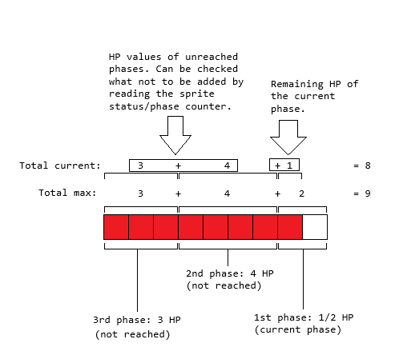
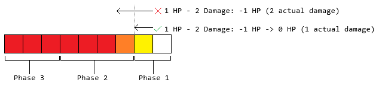

This ASM resource displays the enemies' HP as a numerical value and/or as a bar when they take damage on the status bar/HUD.
This is similar to Kirby & The Amazing Mirror. With the differences being:
The bar in this resource displays its current HP percentage and its previous HP via a rapid-flicker. In K&tAM, the bar
updates with a gradual decrease without showing the previous HP percentage. Note that this can be re-created in the settings.
Touching enemies will not display the meter.
When an enemy damages another enemy, such as a Giant Rocky pounding another enemy, the meter does not automatically switch
to the damaged enemy. This ASM resource however does so (e.g. when a blue shell-less koopa kicks a shell to a Chargin Chuck).
This is because there isn't a check on who kicked/throw the shell (or who damaged the enemy).
A subroutine is provided here (for shared subroutines, SpriteHPDamageNoAutoSwitchMeter) in certain cases where
if an enemy dies not by the player, would not switch the meter (unless the meter is already on that on the enemy) despite
damage taken. For kicked sprites, you may need this patch,
modify it when not flagged as “kicked by the player” to use this subroutine instead of SpriteHPDamage.
So few enemies in SMW can take damage without being one-shotted, they are Chucks, Wendy/Lemmy, Ludwig, Morton/Roy, Big Boo boss,
and Bowser (although the status bar in the last battle is disabled). However, this ASM resource optionally supports 1-shot enemies.
Note that code blocks here can be easily copied by holding down CTRL and double-clicking the text.
Shared Subroutines (version 2.4.2 or later). Needed because there are subroutines that may be needed for pixi sprites, SMW sprites (patch), and uberasm tool code, and
their own built-in subroutines are isolated from one another (e.g. you cannot use pixi subroutines from an uberasm tool code and vice versa).
Status bar/HUD enhancement patches, this ASM package by default assumes you are using the Super Status Bar patch.
Vanilla status bar is way-too limited. Note that this only supports layer 3 HUDs, not sprite OAM-based patches (you however are free to edit the uberasm tool code though to support OAM).
Other status bar patches that should work (may need some changes in their defines and this ASM resource's defines to prevent HUD element conflicts and potential tile number remapping):
SMB3 (note that you'll need to edit the provided graphics in that resource to include bar tiles)
Dry Bones and Bony Beetle SubOffScreen Fix. Because of an oversight, Dry Bones and Bony Beetle will process off-screen when they're crumpled. If you
enabled displaying HP for 1-shot enemies (which also includes such enemies), the HP meter would continue to display when these enemies are scrolled off-screen without this bugfix patch.
Kick and Drop Override Fix. Due to a bug that allows the player to have persisting Bob-omb explosion hitbox once they drop/kick the carried Bob-Omb
the same frame it explodes (from my testing, occurs with the provided test sprite).
Address Tracker, if you have trouble knowing if there are RAM conflicts (two unrelated resources uses the same addresses at the same time).
Make any changes necessary on the defines, especially freeram data. It is likely that you would have them take up a large amount of bytes due to
them being sprite tables. There are multiple files due to some resources are general-purpose, such as the graphical bar can be used for player's HP
or other meters besides HP. The defines specific to sprite HP are in EnemyHPMeterDefines.asm. The file names for what general-purpose features
should be obvious.
Once you are done, you'll need to have copies of these ASM text files (not the folders itself containing them) in same directory as the tools'
.exe programs are at (pixi and uberasm tool). This also includes Shared Subroutines' SharedSubroutineDefs.asm since UAT and pixi need defines that
points to shared subroutine's addresses. Do not have them in any subfolders beyond that area. Make sure you do not move (copy instead) the define files
in here as the patch will include those define files.
If you later make changes in any of the defines and reinsert by one tool, make sure you update all copies of it and reinsert by other tools with matching settings.
The freeram defines are in EnemyHPMeterDefines.asm for the main part of the resource, in GraphicalBarDefines.asm for handling
graphical bar codes, and NumberDisplayRoutinesDefines.asm for handling left/right aligned number display (suppresses leading zeros). Other defines
aren't technically freeram (StatusBarDefines.asm is meant to re-use the same RAM as the status bar enhancement patch for tile data, and
SA1StuffDefines.asm is used so that the other define files can recognize which alternate RAM to use depending on LoROM or SA-1).
With Shared Subroutines, do the following:
First thing first, make a restore point or a backup of your game file before applying shared subroutines in case of a crash if you set the freespace incorrectly.
Have the enemy HP meter's defines inside Shared Subroutines' folder SharedSub_Defines.
In the folder SharedSubroutines of this package, copy the entire code and paste it in Shared Subroutines' subroutinecode.asm. It can be anywhere, but not in the middle of a subroutine code.
Any subroutines you don't use (for your entire hack, no ASM from anywhere in your ROM using it, not just the enemy HP system), feel free to omit them (remove the subroutine code, the JML and define list item)
to save ROM space. Just to let you know that you can use some of these subroutines for other than sprite HP, as many of them are general-purpose.
Another thing to note is that the HUD write subroutines have 2 variants with the second having “Format2” in its name to support duel-format. Various HUD patches on SMWC including an
overworld border have 2 different formats:
2 Separate tables with one containing just the tile numbers (%TTTTTTTT) and the other tile properties (%YXPCCCTT). Each next byte is the next tile in the sequence. Subroutines
without the Format2 in its name handle this format, and therefore you should have !StatusbarFormat set to $01 in StatusBarDefines.asm. Some of Ladida's
status bar patches uses this format, including but not limited to (at the time of writing this): Minimalist and SMB3 status bar patches.
A single table, with interleaved, alternating bytes (every pair of bytes is the tile number followed by tile properties, like this: %TTTTTTTT, %YXPCCCTT). Every pair of adjacent bytes
is the next tile in the sequence. Subroutines with a Format2 handle this format, and therefore you should have !StatusbarFormat set to $02 in StatusBarDefines.asm.
Kaijyuu's Super Status Bar and MarioFanGamer's Overworld Border Plus patch uses this format (at the time of writing this).
In the case you are using MarioFanGamer's Overworld Border Plus patch, and using status bar patches with 2 separate tables, then its possible you need both with and without the Format2 variants installed
in your hack.
Subroutines that you likely not need are:
Graphical bar routines. Not used by the sprite HP system if !Setting_SpriteHP_DisplayGraphicalBar == 0
SetEnemyHPBarAttributes
CalculateGraphicalBarPercentage
CalculateGraphicalBarPercentageRoundDown
CalculateGraphicalBarPercentageRoundUp
GraphicalBarExtendLeft
GraphicalBarExtendLeftFormat2
ConvertBarFillAmountToTiles
DrawGraphicalBarSubtractionLoopEdition
GraphicalBarRoundAwayEmpty
GraphicalBarRoundAwayEmptyFull
GraphicalBarRoundAwayFull
WriteBarToHUD
WriteBarToHUDFormat2
WriteBarToHUDLeftwards
WriteBarToHUDLeftwardsFormat2
Bar animation routines, not used by the sprite HP system if !Setting_SpriteHP_DisplayGraphicalBar == 0 OR !Setting_SpriteHP_BarAnimation == 0
SpriteHPRemoveRecordEffect
Number display routines, not used if !Setting_SpriteHP_DisplayNumerical == 0:
ConvertToRightAligned (only used if !Setting_SpriteHP_NumericalTextAlignment == 2)
ConvertToRightAlignedFormat2 (same as above)
RemoveLeadingZeroes16Bit (only used if !Setting_SpriteHP_NumericalTextAlignment == 0 or when you have !Setting_SpriteHP_DisplayNumerical == 1 and !Setting_SpriteHP_NumericalTextAlignment == 2, which is a right-aligned single number)
SixteenBitHexDecDivision
SuppressLeadingZeros (used if !Setting_SpriteHP_NumericalTextAlignment is set to 1 or 2), left or right aligned
WriteStringDigitsToHUD
WriteStringDigitsToHUDFormat2
Other:
SpriteHPIntroEffect (delete this if you don't want to have a boss intro-fill effect)
SpritesTotalHPIntroEffect (remove this from the JML and macro define list if you're not using the total HP system)
In Shared Subroutine's sharedsub.asm in the JML list, paste the following (remove JML list items you won't be using for your entire hack):
Now make sure their order and positions in the list of the entire JML and define list matches (if you paste the JML list starting at the 51st item, then the define list must also be placed starting at the 51st item),
else define names gets assigned to the wrong subroutine label, which causes glitches or crashes.
Now in the define file of the previous set, you must set !Freespace_SharedSub_JMLList to be at an address that is the start of a freespace. Follow the instructions in Shared Subroutine's Readme on how to
locate freespace.
Now patch sharedsub.asm to your game.
Patch a status bar/HUD enhancement patch into your game. Note that this ASM resource by default, assumes you are using the Super Status Bar patch. If this is not the case, you need to open StatusBarDefines.asm
of this package and change the base address to match with whatever status bar patch you're using that are the tile data, then reinsert UAT and pixi if you have inserted prior.
Patch HPSystemForSMWSprites.asm to your game. This adds a health system for some sprites, one-shot enemies and bosses and fixes an anomaly for SMW.
This alone does not display meter, but will write to various RAM for the uberasm tool code to display it.
Note that as you develop your hack, you may need to open (with a text editor), edit, and reinsert this patch, espically if you're planning to use the enemy ambush system provided in this ASM
resource pack. The stuff you most likely need to edit are a table under label “.DefaultSMWSprHP” and “.DefaultCustSprHP”[reinsert as hack being developed].
See comments ajoining the tables for more information.
NOTE: Beware of patches that modifies things that would interact with sprites, such as my Bounce Block fix patch that handles a custom bounce block interaction
system. Some hijacks may conflict (often a crash) uses a JML and skip a large enough chunk of code that may be hijacked by this patch and vice versa (nullifying the effects). Open such patches and pay attention to the address
an org address is set to. If you need to have both conflicting patches, the hijack needs to be merged into one (will require ASM knowledge of patches, basically one of the two ASM files contain an org $xxxxxx hijack
jumps to a freespace code that handles BOTH patches).
Uberasm tool:
Include the defines, from this ASM pack, and shared subroutine's SharedSubroutineDefs.asm, be placed where the .exe is at.
Insert the ASM files to Uberasm tool. The provided folders should be obvious.
Notes that if you have special custom sprites where the meter should not show depending on its state, you'll need to open UberASMTool/level/DisplayEnemyHP.asm
and under label .CheckForBlacklistedSprites (at the bottom), add an entry for your custom sprite. Same goes with .CheckForBlacklistedSpritesTotalHP,
if you're planning to have an HP meter showing the total HP of the ambush[reinsert as hack being developed].
Insert the ASM files for pixi. Same way as uberasm tool. if you want custom sprites. I provided a test sprite in the folder for demonstration.
Lunar Magic stuff
Insert the layer 3 status bar ExGFX by “Quick Extract ExGFX from ROM” (blue mushroom icon) to spawn a ExGraphics folder (unless you did so already), then,
inside this ASM resource, navigate to LM stuff/ExGraphics. Here you'll find a graphic file (uses ExGFX slot $80 by default, rename to have it at a different slot number). This file should
be pasted in the ExGraphics of your game file. To insert into your game, click “Quick Insert ExGFX to ROM” (golden mushroom). Finally, in ANY level asscessible by the player that the meter can appear in,
click “Open "Layer 3 GFX/Tilemap Bypass" Dialog” (green poison mushroom), and set LG1 to use your inserted graphics file (by default, should be $80 if you didn't change the slot number).
This graphic is for layer 3 status bar, since some symbols and other tiles are needed for the display are missing. The tiles used are the slash and graphical bar tiles.
Define !sprite_slots holds the number of sprite slots that exists. For LoROM, its 12, if SA-1, its 22. Note that at the time of writing this, Pixi have !SprSize and not !sprite_Slots.
The RAM stuff here are merely for displaying the amount of HP. Meaning depending on how the sprite's code is formatted, most often it's actual HP value is stored in a vanilla sprite table, which may be transferred to here. If it's
a damage counter, it is converted to “remaining hits/damage left to kill” before written to these new RAM stuff here. Of course, for custom sprites, you can make changes to it to directly use these table instead.
Other than the RAM data for graphical bar and HexDec routines (defines are in GraphicalBarDefines.asm and NumberDisplayRoutinesDefines.asm), the sprite HP data and display handler are in EnemyHPMeterDefines.asm,
defined as !Freeram_SpriteHP_SpriteHPData. It's layout are, in this order, starting at an address defined as !Freeram_SpriteHP_SpriteHPData, and advancing to higher-addresses based on its size/length,
placed contiguously:
Define
Type
Number of bytes
Description
Use condition
!Freeram_SpriteHP_MeterState
State
1
HP meter state, the values are:
From $00 to !sprite_slots-1 will make the bar visible and display HP of the sprite of the slot corresponding to this value.
From !sprite_slots to (!sprite_slots*2)-1 is the same as above (subtract by !sprite_slots to obtain the sprite slot number) but for the intro-fill animation (bar appears empty, and fills up, useful for boss fights). This only applies
if !Setting_SpriteHP_DisplayGraphicalBar and !Setting_SpriteHP_BarAnimation set to 1.
!sprite_slots*2 Is “Total HP” mode, which results in the game displaying the total HP of all active applicable sprites. If !Setting_SpriteHP_TotalHPMode == 2, then its all sprites plus whatever value is in !Freeram_SpriteHP_TotalHPOfUnloadedSprites. Only usable if !Setting_SpriteHP_TotalHPMode is set to 1 or 2.Disable-able
(!sprite_slots*2)+1 Same as above but for intro fill mode.Disable-able
$FF Means don't display the meter, which occurs when the enemy despawns or dies the meter is displaying for. Note that this will write blank tiles every frame.
$FE is “disabled”, will only write blank tiles to clear the HP meter display once, then set itself to $FD. Make sure you do not set this to $FE every frame though.
$FD is also “disabled”, but will not write anything on the spot the meter occupies (stops writing tiles here every frame, including blank tiles).
Notes:
Note that when disabled ($FD), you can use that spot where the meter occupies without it being overwritten. It also prevents displaying the meter if the intro-fill animation plays, as well as displaying the meter when damaging enemies.
Any item marked with a “Disable-able” means that they will be unused when a feature is disabled. When this happens, the values the modes are assigned to will not be contigious and will have gaps.
Always
!Freeram_SpriteHP_CurrentHPLow
Sprite slots
!sprite_slots
Sprite's current HP, low byte.
Always
!Freeram_SpriteHP_MaxHPLow
Sprite slots
!sprite_slots
Sprite's maximum HP, low byte.
Always
!Freeram_SpriteHP_CurrentHPHi
Sprite slots
!sprite_slots
Sprite's current HP, high byte.
if !Setting_SpriteHP_TwoByte is set to 1
!Freeram_SpriteHP_MaxHPHi
Sprite slots
!sprite_slots
Sprite's maximum HP, high byte.
if !Setting_SpriteHP_TwoByte is set to 1
!Freeram_SpriteHP_BarAnimationFill
Current sprite slot
1
The secondary fill amount that “follows” the fill amount representing its current HP. This is to display the amount
of damage/healing as a sliding animation. This does so by using a rapid-flicker to show the difference between current HP fill
and previous HP fill. If intro-fill mode is active, this will be the amount of fill of the filling up animation.
if !Setting_SpriteHP_DisplayGraphicalBar and !Setting_SpriteHP_BarAnimation is set to 1
!Freeram_SpriteHP_BarAnimationTimer
Current sprite slot
1
Delay timer that decreases itself once per frame. When nonzero, !Freeram_SpriteHP_BarAnimationFill briefly freezes
before incrementing or decrementing to its current HP fill amount.
if !Setting_SpriteHP_DisplayGraphicalBar, !Setting_SpriteHP_BarAnimation, and !Setting_SpriteHP_BarChangeDelay is set to nonzero values.
!Freeram_SpriteHP_TotalHPOfUnloadedSprites
TotalHP
1 + !Setting_SpriteHP_TwoByte
When in total HP mode, this holds the total amount of HP of enemies yet to spawn. This can be used to track the total HP in an ambush system.
If !Setting_SpriteHP_TotalHPMode is set to 2.
!Freeram_SpriteHP_TotalMaxHP
TotalHP
1 + !Setting_SpriteHP_TwoByte
The amount of max HP of sprites when HP meter is in “total mode”.
If !Setting_SpriteHP_TotalHPMode is nonzero.
Anything with a red background indicates those are optional features you can disable and will not be used. In LoROM, 25 to 55 bytes will be used, in SA-1, 45 to 95 bytes will be used instead.
If you want to know exactly where they are located, open EnemyHPMeterDefines.asm and set !Setting_SpriteHP_DisplaySpriteHPDataOnConsole to 1 and reinsert (works on any tool except pixi since print
command behaves differently). On the asar console window, will display the address of each subsection of the sprite HP data (this is in address tracker format along with other summaries.).
Alternatively, you can figure out how much memory and where they are by using the calculator below:
Note that this section assumes you know how to program in 65c816 assembly language as well as instructions for Asar on how it compiles code. See this tutorial on how to get started and asar's
document on codes for the tool (docs/manuel/index.html).
This section covers on how to display the sprite's HP.
To program a health system for existing custom sprites that can be damaged without being killed, they should store a value in sprite table RAM representing how much damage (can be any value it
increases), hits (counts up by one regardless of an attack), or remaining health (starts at any nonzero value and decreases each damage) else the sprite will never die or dies in one hit. Because
each sprite is different, documenting every one of them would make this tutorial very long. So I'll explain the method that works with most sprites and with some examples.
I provided an example test sprite under pixi/sprites/simple_sprite.asm for testing the HP system.
Because HP-related defines are heavily involved here, it's important to include the define files at the top of your sprite's ASM file, like this:
Keep in mind that the custom sprite may be multiple folders deep from where the pixi.exe is at, if that's the case, you'll need to add more “../”
at the beginning of the file path (../ means go to a parent directory, from where the ASM file in question is at).
Else you get define not being defined errors. Then after the include-defines, have the macros (the ones on this HTML file) being set/defined (anything with a macro MacroName(Pram1, Pram2...) ... endmacro).
The following stuff is transferring its health and damage RAM to this resource's HP RAM so that it gets displayed. Yes you can modify the custom sprite not to use its own vanilla sprite table RAM
at all and instead directly use this ASM resources' current and max HP RAM (in a way similar to the provided example sprite), however that comes with caveats and may need further edits:
If the sprite utilizes a damage counter (starts at 0 and hits increases this value), you need to reverse it. If there are damage amount thresholds to trigger different phases/attacks, that also needs to be
reversed (for example, 10 points of damage to defeat an enemy, and 7 or more points trigger phase 2. That needs to be
changed to a 10 HP sprite, and triggers phase 2 when its HP drops to 3 or lower).
Most sprites with a health system don't have 16-bit health. If you have !Setting_SpriteHP_TwoByte == 1, you need to either always set their !Freeram_SpriteHP_CurrentHPHi and !Freeram_SpriteHP_MaxHPHi to always zero,
or every code that reads and set their HP to account the high byte when their HP value can go greater than 255.
For boss sprites, to have an optional “intro-fill” effect (meter automatically appears empty and fills up at the start of a fight), run this code under a sprite init, or under main (if you want the
animation after a cutscene after the sprite spawns, but make sure it does not execute every frame) by calling it like this: JSL !SharedSub_SpriteHPIntroEffect. Note that you must have !Setting_SpriteHP_DisplayGraphicalBar and
!Setting_SpriteHP_BarAnimation be set to 1 (else it just appears full without animation):
;Have the following as an option on your custom sprite if you are willing to submit it to SMWC.
!Setting_IntroFill = 1 ;>0 = no, 1 = yes (switch display to boss sprite with filling animation or simply a full bar if animation disabled).
;Have this in the sprite's code, either in the INIT or in the main (but only call it once, such as when the cutscene ends)
if !Setting_IntroFill
JSL !SharedSub_SpriteHPIntroEffect
endif
This covers on how to extract data from a sprite table that is being used to track the amount of damage or health, then storing that data to !Freeram_SpriteHP_CurrentHPLow, !Freeram_SpriteHP_MaxHPLow
(!Freeram_SpriteHP_CurrentHPHi and !Freeram_SpriteHP_MaxHPHi in addition if !Setting_SpriteHP_TwoByte == 1) so that it gets displayed on the HUD. This must run every frame (as a failsafe in
case if the sprite's real health sprite table changes without that being shown) on the sprite main (preferably at the start). Note that the following code uses a macro that doesn't get used unless you call it.
When a custom sprite stores a number (DamageCount) that starts at 0 (spawned sprites automatically sets their sprite table values to $00 by default), and increases (commonly by 1 as a hit counter) for each hit the sprite receives, HP can be found by
taking the amount of damage needed to defeat the enemy, and subtract that by DamageCount to obtain the remaining damage needed to defeat the sprite:
macro ConvertDamageAmountToHP(DamageCountSpriteTableRAM, DamageAmountToDie)
?HitCountToHP:
LDA.b #<DamageAmountToDie> ;>The amount of damage that would kill the sprite
STA !Freeram_SpriteHP_MaxHPLow,x ;>This also means its maximum health is this value.
SEC ;\RemainingHP = DamageAmountToDie - DamageCount
SBC <DamageCountSpriteTableRAM>,x ;/
BCS ?.NotMoreThanEnoughDamage ;>Failsafe, if DamageCount is greater than DamageAmountToDie, remaining HP cannot go negative, so...
?.MoreThanEnough
LDA #$00 ;>...Set it to 0.
?.NotMoreThanEnoughDamage
STA !Freeram_SpriteHP_CurrentHPLow,x ;>otherwise just write the non-negative difference as HP.
if !Setting_SpriteHP_TwoByte != 0
LDA #$00 ;\Rid high bytes.
STA !Freeram_SpriteHP_CurrentHPHi,x ;|(So far, there is never a sprite that stores a 16-bit damage counter)
STA !Freeram_SpriteHP_MaxHPHi,x ;/
endif
endmacro
For example, Chargin' Chucks have their damage counter stored at sprite table $1528. This means to call the macro with the DamageCountSpriteTableRAM set to !1528 (address changed to a define for SA-1 hybrid support).
With the patch installed, the sprite dies if the damage counter reaches 15 or more. So the DamageAmountToDie should be 15. With this, the macro should be called like this: %ConvertDamageAmountToHP(!1528, 15). Similarly, Ludwig, Morton and Roy,
uses RAM $1626 and so it must be called via %ConvertDamageAmountToHP(!1626, 12).
The reason why HPSystemForSMWSprites.asm needs to modify the health system for Chucks (15HP, Stomps: 5DMG, Fireballs: 3DMG), Ludwig, Morton, and Roy (12HP, Stomps: 4DMG, Fireballs: 1DMG ) is because of its faulty programming:
Both Fireballs and stomp attacks, contributes 1 damage added to the counter. To defeat them, instead of it accruing damage to at or above a single, specific value, it has 2 values to check that depends on the most recent hit
if it is a fireball (≥5 for chucks, ≥12 for Ludwig, Morton or Roy) or jump attack (≥3 for all aformentioned enemies). If that was health that decreases from damages, instead of just having 0 HP or less to defeat, we would have different arbitrary values
(possibly negative values) it needs to be less or equal to defeat the enemy, depending on the most recent attack.
This have created an exploit that lets the player defeat Chucks and Ludwig/Morton/Roy quickly by shooting 2 fireballs, then jumping on them. It also creates another anomaly that 2 Fireballs and then a stomp would seemingly deal enough damage to the enemy,
but if the order of attacks was re-arranged so the last hit was a fireball instead, the enemy wouldn't be defeated, which violates the commutative property of addition
(assuming no damage modifiers for later attacks).
This oversight is mentioned as a glitch in Mariowiki: Ludwig, Morton, and Roy
but not the Chargin Chuck at the time of writing this.
The patch modifies this to work as a proper damage system. Damages from fireballs and stomps deal different amounts, and there is only one value (reguardless of attack type) that if the damage counter reaches or exceeds it, kills the enemy.
By default, Chucks needed 15 or more points of damage to defeat, fireballs deal 3 damage and stomps deal 5. And for Ludwig, Morton, and Roy, they needed 12 points to defeat, with fireballs dealing 1 damage, and Stomp attacks dealing 4.
All of these preserves the amount of same-attack-types hits to be the same as vanilla.
This assumes that the custom sprite you have stores the health amount (a number starting at some nonzero value, commonly set to when running init code, and decreases when taking damage) rather than a damage/hit counter. This, is in fact, even easier than having to invert
the damage counter. All you have to do is simply load its source HP data, and store it directly into the HP data of this ASM resource:
macro TransferHealthToHPData(HealthSpriteTableRAM, MaxHealth)
LDA <HealthSpriteTableRAM>,x ;\Transfer its own HP data to this ASM resource's HP data
STA !Freeram_SpriteHP_CurrentHPLow,x ;/
LDA.b #<MaxHealth> ;>Warning, make sure the define being set to a value does not have the hash symbol (must be !HitPoints = $03, not !HitPoints = #$03), else asar will complain
STA !Freeram_SpriteHP_MaxHPLow,x
if !Setting_SpriteHP_TwoByte != 0
LDA #$00 ;\Rid high bytes.
STA !Freeram_SpriteHP_CurrentHPHi,x ;|(So far, there is never a sprite that stores a 16-bit health amount)
STA !Freeram_SpriteHP_MaxHPHi,x ;/
endif
endmacro
One sprite that does this is the Spiny Boss from SMWCP1. It stores its HP data in RAM $1528 (defined as !sprite_health). In that case, you simply have to
do this: %TransferHealthToHPData(!sprite_health, !MaxHP) under its “SpriteCode” before any code.
Note that if you patched HPSystemForSMWSprites.asm, and your sprite uses the HP system directly, then 99% of cases you don't need to set its HP at init. The only times you need to set its HP at init are sprites that conditionally
have a variable amount of HP depending on its extra byte/bits, such as the Better Pokey custom sprite, whose HP depends on how many segments (including the head), the sprite has.
Like I said before, the sprite having HP/Damage system must have something that would track the amount health or damage when a hit occurs, else it would take one hit to kill or have infinite HP. Thankfully most sprites have comments and defines
in their ASM codes (CTRL+F to see how the defines are being used and you get a clue on what RAM is its health/damage) that tell you what the codes do. However, this isn't just changing the HP amounts when the sprite takes damage or heals, you also need to do in addition:
If you have animation enabled (!Setting_SpriteHP_BarAnimation set to 1), you need to set some values for that.
Without it, dealing damage would skip the animation (such as the bar that shows previous fill amount prior to the damage immediately
decreasing without the freeze delay). If you have !Freeram_SpriteHP_BarAnimationTimer != 0, it should also set the delay
timer to the value of !Freeram_SpriteHP_BarAnimationTimer.
Ensure that the health meter always switches to the recently damaged enemy when hit. Otherwise it either stays hidden, stays on the enemy second-or-later-last sprite the player caused damage to or by intro-fill.
Thankfully, all that logic is handled automatically in a subroutine defined as !SharedSub_SpriteHPDamage, with the inputs stored in RAM $00 (2 bytes, $00~$01, if !Setting_SpriteHP_TwoByte == 1). Feel free to check out the subroutines as you wish.
The same rule applies to healing as well (to show how much the fill increases). A subroutine for pixi pixi/routines/EnemyHPHeal.asm, which can be called via %EnemyHPHeal() (similarly $00 or $00~$01 for how much HP recovered).
Why in pixi? It's because none of vanilla SMW sprites heals, and at the time of writing this, not a single custom sprite can actually heal.
If you want to know how it works, just open the provided Shared Subroutines code, pixi routine, custom sprite's asm file or view the provided patch and seeing the SMW disassembly.
If you're dealing with an incremental damage counter-type HP for bosses and wanted a damage animation, you would do the same thing, just make sure the how much it increases are stored in $00, for example,
the Giant Masked Koopa boss:
INC !1534,x ; increment sprite hit counter (this counts the damage up by 1)
LDA !1534,x ;\ If it has incremented to the "max", do death animation.
CMP.b #!HitPoints ; |
BEQ SpriteDead ;/
Should be changed to:
INC !1534,x ; increment sprite hit counter (this counts the damage up by 1)
if !Setting_SpriteHP_TwoByte
REP #$20
LDA #$0001
STA $00
SEP #$20
else
LDA #$01
STA $00
endif
JSL !SharedSub_SpriteHPDamage ;>Reflect the damage over to the sprite HP data (yes, the HP data is already synced via macro call of "ConvertDamageAmountToHP", however this may only happen before this code, which may cause 1-frame off-sync, also we need the bar animation to be set)
LDA !1534,x ;\ If it has incremented to the "max", do death animation.
CMP.b #!HitPoints ; |
BEQ SpriteDead ;/
The same goes with if it have a health counter rather than a damage counter. For example, the Spiny Boss's damage code (yeah, some of the comments are incorrect (at the time of making this), such as “Increase” when it supposed to say “Decrease”.):
DEC !sprite_health,x ; Increase hit counter and...
LDA !sprite_health,x ; \ Check if the sprite has been hit 3 times
BNE .justHit
To be changed to:
DEC !sprite_health,x ; Increase hit counter and...
if !Setting_SpriteHP_TwoByte
REP #$20
LDA #$0001
STA $00
SEP #$20
else
LDA #$01
STA $00
endif
JSL !SharedSub_SpriteHPDamage
LDA !sprite_health,x ; \ Check if the sprite has been hit 3 times
BNE .justHit
Be careful that if scratch RAM $00~$01 was used before and after here and needs to be retained, you need to preserve it before you write to $00~$01 and restore it after JSL !SharedSub_SpriteHPDamage, or place it in an area where $00~$01 is not used at all. For preserving values
it shoud look like this:
;[...]
if !Setting_SpriteHP_TwoByte
REP #$20
PEI ($00) ;>Push RAM $00~$01 into stack ("PEI ($XX)" is like "LDA $xx : PHA" in 16-bit but without affecting A and code occupying 1 less byte)
LDA #$0001
STA $00
SEP #$20
else
LDA $00 ;\Push RAM $00 into stack
PHA ;/
LDA #$01
STA $00
endif
JSL !SharedSub_SpriteHPDamage
if !Setting_SpriteHP_TwoByte
REP #$20
PLA ;\Restore $00~$01 from the stack
STA $00 ;/
SEP #$20
else
PLA ;\Restore $00 from the stack
STA $00 ;/
endif
;[...]
Now, if the sprite can take multiple points and different amounts of damage instead of 1 point (and often have multiple ways to deal damage than just stomp), such as the Wreckin' Chuck by Sonikku,
then you should also have those damages reflected into RAM $00. Here is the code that handles increasing the damage count:
;[...]
.DealDamage
;; play sfx
LDA #$28
STA $1DFC|!addr
;; get amount of damage in Y
TYA
CLC
ADC !1528,x
CMP #!Damage_MaxHP
BCC +
;[...]
Change that to this:
;[...]
.DealDamage
;; play sfx
LDA #$28
STA $1DFC|!addr
;; get amount of damage in Y
STY $00 ;>Store damage from the Y register to $00
if !Setting_SpriteHP_TwoByte
STZ $01
endif
JSL !SharedSub_SpriteHPDamage
TYA
CLC
ADC !1528,x
CMP #!Damage_MaxHP
BCC +
;[...]
Now this sprite did have damages handled in its own subroutine called from the stomping and thrown sprite handler. If there are multiple instances of increasing/decreasing the RAM (not using a subroutine to merge them into
one), then every one of them should be changed to include setting RAM $00 and then calling JSL !SharedSub_SpriteHPDamage so all damage types will perform the bar animation (if you enabled it) and other
effects (such as switching the health meter to the sprite you dealt damage to).
For 1-shot custom sprites (or any sprite that can be instantly-killed, either a 1HP enemy or any enemy with any amount of HP but there are attacks that instantly-kills them), to display their HP, that can easily be done
by having define !Setting_SpriteHP_VanillaSprite_OneShotSprites (in EnemyHPMeterDefines.asm) set to 1 and HPSystemForSMWSprites.asm patched.
However, this only works if they're using the vanilla death routine. If your 1-shot enemy have custom methods of of it being killed by the player, then find (could be in the custom sprite's code, or in a routine) where
it sets $14C8 to any death state (commonly used death values are $02~$05) and add this line of code to make it show its HP meter:
LDA.b #<DeathStateValue>
STA !14C8,x
;Display 0HP (deals 255 or 65535 damage, cannot underflow)
if !Setting_SpriteHP_TwoByte == 0
LDA.b #!SpriteHP_MaxHPAndDamageValue
STA $00
else
REP #$20
LDA.w #!SpriteHP_MaxHPAndDamageValue
STA $00
SEP #$20
endif
JSL !SharedSub_SpriteHPDamage
Note that setting $14C8 to #$00 would not show the meter because the sprite have instantly become a free sprite slot, which this ASM pack would avoid showing HP of a non-existent sprite. If a new sprite
is spawned on this sprite slot on the same frame this sprite became free, this causes a glitch where the HP meter would switch to that newly spawned sprite, thus to prevent this, call JSL !SharedSub_HideHPMeterIfSpriteDespawns
immidiately after its $14C8 is set to #$00.
This section covers sprites, most likely bosses, that stores HP in memory that is per-phase, and we need to get the total HP value of all phases. So far, I have not seen any sprite released in the section that does this. If they have, most likely they would have different coding and behavior structures.
This section explains the general principal of that.
To calculate the total max HP, it's simply adding all the starting HP values of each phase. To get the total current HP, you'll need to find out how many phases that the player have not reached (not counting the current phase and phases the player have cleared), add up all that HP,
then add by the remaining HP of the current phase, as seen in the example below:

If the system uses a damage/hit counter, then you need to count how many phases the player have cleared, add how much damage/hits to clear each of those phases, and the amount of damage have taken on the current phase, which will be DamageAccrued. After that, take its total damage of all phases to defeat the sprite,
and subtract by DamageAccrued to obtain the total remaining health.
Note that if damages can be multiple points of units, and doesn't carry over to the next phase (meaning HP will always be full on that phase regardless of how much damage taken on the phase prior), then you would want not want to use the standard damage
with the amount of damage by the player, else the HP display would desync with the meter saying it takes the full damage amount as the sprite takes partial damage. Instead, just use its remaining HP of the current phase as the amount of damage (so it performs DisplayedDamage = HPLeftInAPhase)
when the sprite receives the final blow of the phase:

The same also applies to damage/hit counter. Using the equivalent to above example, at phase 1, 2 damage points are needed to enter phase 2, and it have taken 1 point of damage. If more than 1 point of damage have been dealt, it will be reduced to 1 damage (1 damage point + 2 damage = 3 damage, but caps it at 2). When excess damage occurs, the true damage amount is again, the remaining points left until a phase trigger:
DamageAmountToTriggerNextPhase - DamageAccruedBeforeExceedingTrigger (2 damage to trigger - 1 damage accrued = maximum of 1 damage point allowed) which should be written to $00 (2 bytes, $00~$01, if !Setting_SpriteHP_TwoByte == 1) before calling JSL !SharedSub_SpriteHPDamage.
This section covers a feature that displays the total HP across multiple enemies at once. An example usage for SMW is the Reznor boss battle, which the meter shows 4 HP, each Reznor having 1 HP.
Included is an ambush mechanic that enemies spawns in waves that the player must defeat them to advance, see UberASMTool/level/AmbushWithTotalHPMeter.asm.
Notes when using this test ASM file:
It requires having !Setting_SpriteHP_VanillaSprite_OneShotSprites == 1.
It also requires having !Setting_SpriteHP_TotalHPMode == 2, since the main feature is the meter showing total HP of all (applicible)
sprites, including ones yet to spawn.
Total HP cannot exceed the maximum integer limit, 255 (if !Setting_SpriteHP_TwoByte == 0), or 65535 otherwise.
Subroutine SpriteHPDamage automatically handles total HP mode.
The display is handled internally, in UberASMTool/level/DisplayEnemyHP.asm, under sublabel ..TotalHPMode it loops across all sprite slots, adds HP of any applicible (See under label “.CheckForBlacklistedSprites” without an opcode before it) sprites, and optionally adds by a value stored in
!Freeram_SpriteHP_TotalHPOfUnloadedSprites (if !Setting_SpriteHP_TotalHPMode == 2), and the total is the value used to display the HP amount.
For further information on how to make sure the meter works correctly, see the comments in AmbushWithTotalHPMeter.asm with a text editor.
Any sprite (most likely custom sprites) with 6th tweaker byte's (RAM $190F) bit 3 (Takes 5 fireballs to kill) being set,
along with other tweaker settings:
$166E's bit 4 (“Disable fireball killing”) to be 0/false
$167A's bit 1 (“Invincible to star/cape/fire/bouncing bricks”) to be 0/false
will also be affected by this patch. In the original game, this feature was only used by Chargin' Chucks and
all its variants. Instead of counting RAM $1528 up by 1 and killing the sprite when reaches 5 or more, it counts up by a value defined as !Setting_SpriteHP_FireballDamageAmount,
and dies if this number reaches or exceeds a value defined as !Setting_SpriteHP_VanillaSprite_Chucks_HPAmount (these are found in EnemyHPMeterDefines.asm). The code checking if enough damage have been made by the fireballs is
processed by the fireballs' code (at $02A0FC) rather than the sprite's code.
However, if you have !Setting_SpriteHP_Modify5FireballsSystem (in EnemyHPMeterDefines.asm) set to 1, it will use the HP values from this ASM resource directly instead, and not modify $1528. Again, make sure
custom sprites using the take 5 fireballs to kill's code is adopted to work with this.
Ludwig, Morton, and Roy, however, their sprite code processes the fireball damage manually and in their own sprite code, and does not utilizes the 5 fireballs tweaker bit.
There is a bug on how SMW handles player kicking carried sprites. If you release a sprite (either by kicking or dropping them) on the frame the sprite you're carrying ($14C8) is set to other values, (such as erasing the sprite),
you'll cancel out the status being written. This is because the player releasing the sprite action overrides whatever previous code meant to make it perform certain actions.
This also lead to an exploit with the test sprite's explosion damage handler by having basically infinite explosion (Bob-omb explodes, $1534 is set to mark that it is exploding and $14C8 gets sets to $08, Mario releases the Bob-omb from his hands and sets $14C8
to $09/$0A, while still marked that it is exploding, leading to a persisting explosion hitbox and causing the test sprite to receive repeated damage from the same explosion).
Interestingly, Bowser actually have a HP counter (RAM $187B) rather than a hit counter. It is the only boss sprite in the vanilla game that have this.
Internally, when Wendy, Lemmy, Ludwig, Morton, Roy, Big Boo Boss, and Bowser takes damage, their hit count/HP values do not update until their “hurt” animation finishes. In addition, Wendy and Lemmy would delete all other sprites when taking the last hit when their hit counter is at one-less than the amount to defeat.
This ASM resource does not support vanilla bowser battle because of 2 reasons (yes, despite I have made sprite OAM-based HUD elements in the tutorials):
The game overrides the sprite graphics (MechaKoopas are at SP4=$0E, but in LM, its default graphics are SP4=$02 (forest)), so assuming I have sprite OAM support, there is no way to fix the incorrect graphics for the sprite HP meter display.
Vanilla Bowser battle is rarely used in SMW hacks, due to it being not customizable.
When Koopa Troopas get seperated from their shells (either by jumping on them, or stunning them in their shells via capespin, bounce block, cape diving into the ground, or net punch and waiting till they exit), the Koopa Troopa itself turns into a shell of the same sprite number (just with a changed state), and spawns a shell-less Koopa.
And when a shell-less Koopa (except the blue one) enters a shell, the shell becomes a Koopa Troopa and the shell-less koopa despawns (via suboffscreen function, to prevent it from permanently disappearing if the shell-less koopa was placed directly in the level, see $018AC9). Thus, the HP meter needs to switch between a
koopa/shell and shell-less koopa sprite.
If the HP meter is on a sprite slot that despawned, and a newly spawned sprite occupies that same slot at the same frame, this may cause a glitch that the meter to
transfer to the newly spawned sprite rather than disappearing. This is because despawning and then spawning happened before DisplayEnemyHP.asm checks if the sprite slot become empty. To
prevent this, call JSL !SharedSub_HideHPMeterIfSpriteDespawns after $14C8 gets potentially set to $00, before any spawning-sprite-related action occurs. Example:
;Off-screen despawn:
;[...]
LDA #$00
%SubOffScreen() ;>Here, $14C8,x may be zero after this.
JSL !SharedSub_HideHPMeterIfSpriteDespawns ;>Call a subroutine that turns the meter display off if $14C8,x is zero.
;[...]
;Deleting the sprite instantly:
;[...]
STZ !14C8,x
JSL !SharedSub_HideHPMeterIfSpriteDespawns ;>Hide the HP meter immidiately.
;[...]
Q: When the meter shows up, the meter appears with glitchy graphics! What happened?
A: You most likely either forgot to insert the exgraphics for the layer 3 status bar, or you have inserted it into your game, but haven't properly set the level to use the correct graphics. See “Lunar Magic stuff” on inserting the correct graphics
Q: “When the HP meter appears, and despite the setting !Setting_SpriteHP_DisplayNumerical set to 1 or 2, the numbers won't appear anyway.”
A: The sprite have too much HP digits, either have lower HP values or set !Setting_SpriteHP_MaxDigits to a higher value. Not showing the text is a failsafe if the string gets too long. That failsafe is intended to avoid writing too many symbols
onto the status bar that some tiles that supposed to disappear failed to do so (when the string gets shorter), or worse, write data beyond the status bar tile data. You can turn it off (may come with such a risk) by setting !Setting_SpriteHP_ExcessDigitProt to 0.
Q: “When I damage an enemy that uses the HP system, it's HP shown won't go down!”
A: There are possible cases that have occurred:
Numbers not showing (either because you have them disabled via !Setting_SpriteHP_DisplayNumerical == 0 or too many symbols in the text display of the numbers), and it's HP is set above its maximum. With intro-fill enabled and displaying the graphical bar, the sound effect !Setting_SpriteHP_FillingSFXNumb being nonzero, results in the filling sound effect continuing to play even after the bar reaches 100%.
The amount of damage it receives was set to 0 damage, causing no changes on its HP value.
You forgot to modify the sprite's code to write its own HP data into this ASM resource' HP data to display properly.
Having !Setting_SpriteHP_DisplayNumerical == 0, if you have more max HP than the max number of pieces the bar has, small damages can result in the bar visibly not updating. This is because a range of current HP values get approximated (rounded) to the
same amount of fill in the bar. This isn't a problem.
Q: “My game crashed! What happened?”
A: Possible causes:
RAM conflicts. The RAM usage on this package alone are the sprite HP data, a byte used for Wendy/Lemmy to tell if the intro-fill have been played (by default, it is the address of the last block of the level map16 data; which you are
unlikely to use in a 1-screen wide boss room), graphical bar input and outputs, and the character tile table for displaying aligned digit/text for leading-zero suppression. While “!Scratchram_<ResourceName>...” can be reused as another scratch RAM (as
long as after the code finish using it you can re-use it for something else), the same can't be said if they are named “!Freeram_<ResourceName>.... Make sure you pay attention on every installed ASM resource
on what RAMs are being used. If you have trouble knowing if a RAM conflicts, use the Address Tracker as mentioned in the recommended at the top of this readme.
Hijack conflicts. This should only be possible if you patch HPSystemForSMWSprites.asm along with 3rd party patches that also modifies SMW's sprites (including extended sprites - player's fireball mainly) with overlapping hijacks with those said patches (such as
“FireBall HP” patch by Bio).
Incorrect use of Shared Subroutines:
Using an Incorrect address for Shared Subroutines JML list. Make sure you place it at an actual freespace and not address occupied by the original game, other patches, including by other tools and Lunar Magic.
Best way to fix is to revert your game to a previous state before patching Shared Subroutines (Lunar Magic's menu bar → Restore → Restore ROM to previous state...), correct the address for the JML list, re-patch, and update every copy of the Shared Subroutine defines for all ASM resources using the Shared Subroutines and re-insert them.
You've relocated the JML list but not updated the defines that references the JML list in other ASM stuff, causing the game's code to jump to an old outdated area that is invalid.
Faulty code that you have found that I didn't catch (most likely if you haven't installed any other ASM resource). PM me or the moderators on fixing a newly discovered bug. If I'm inactive, feel free to update it.
Q: “I tried everything to get the sprite display its HP and the meter is acting funny. How do I fix this?”
A: Possible cases:
If the meter starts empty, and fills up as you damage the sprite, then you've used a value as a health counter when the value tracked is actually a damage counter, or incorrectly converted a value you think its a damage counter but is actually a health counter.
If the meter keeps changing values depending on the sprite's action or state, then the sprite may have its HP tied directly to its state or phase. I've never seen such a sprite do that. In theory, you can convert that to HP via loading that value, index it (often to Y register)
load a phase-to-HP table whose state values are correspond to HP amount left and now you have the equivalent HP amount. Most likely use of this format is if every damage taken triggers a phase or something.
If the sprite dies prematurely without the meter being empty, or dies after some additional hits after the meter empties:
The HP value is offset by some amount (including negative values, likely used as an index to unlocking new attacks and phases). For example, Sonikku's FryGuy, at the time of writing this, stores its HP value
minus 1 (3 HP is $02 in its sprite table RAM). The sprite dies if its HP reaches any negative amount. I did post a comment on there instructing on how to get it to display HP properly.
The sprite may be programmed to instantly die without setting its HP to 0, usually for scripted cutscenes, or you found a bug that resulted in the sprite using the vanilla instant-kill interaction. So far, I never seen a custom sprite does this intentionally. An easy way to fix this
is to simply set its display HP to 0 rather than its actual HP sprite table RAM (just in case it might break the sprite functionality) when this death state occurs:
;These are just to have a proper damage animation on the meter.
;Either it subtracts by a larger value, detects that, sets to zero,
;or subtracts by the same value and also results zero.
if !Setting_SpriteHP_TwoByte
REP #$20
LDA #$FFFF
STA $00
SEP #$20
else
LDA #$FF
STA $00
endif
JSL !SharedSub_SpriteHPDamage
You are using an entirely wrong sprite table RAM address as HP. Probable causes is either a typo or an incorrect assigning a sprite table define to another define.
In other cases, the custom sprite you're using may have an even weirder or unusual format on how it handles HP/Damage. I strongly recommend checking how the code read and writes its HP value, and use a debugger and spot any behavior patterns with it.
If it's a sprite on SMWC, I or someone else may post instructions in the comments on how to get it to work with this ASM resource. If you have the knowledge to get it working, you are free to post it if you wish.
Q: I tried inserting the ASM files, ran the .exe programs and Shared Subroutines via asar to insert it into the game, and got errors like “Efile_not_found” and “Define <Define_name> wasn't found.”
A: Possible causes:
You forgot to paste (copies of) the define files (from here and Shared Subroutine's SharedSubroutineDefs.asm) in the respective tools and Shared Subroutines patch. For tools, they must be located where their .exes are at,
for Shared Subroutines, they must be placed inside its SharedSub_Defines folder.
You forgot to include the define files (using incsrc <Path_to_Define>), or the path is incorrect.
You've used an incorrect define settings, for example, with !Setting_SpriteHP_TwoByte = 0 setting, defines involving the HP high bytes (!Freeram_SpriteHP_CurrentHPHi, !Freeram_SpriteHP_MaxHPHi) don't exists.
This is caused by having copies of the define settings not matching across tools, and/or not checking if !Setting_SpriteHP_TwoByte is set to 1.
Q: For most sprites (espically vanilla), whenever a sprite instantly dies, the meter simply disappears rather than go empty then disappear!
A: That's intentional. Reasons are:
The display HP code checks if the sprite is non-existent (as in, $14C8 being $00). If that's the case, it wouldn't display HP of something that doesn't exists. If it were to continue to display,
and a sprite was spawned on the same slot the sprite was deleted, the HP meter would then “transfer” to this new sprite, even when it shouldn't use the HP system.
Killing enemies (such as a Rex) with a fireball (from Fire Mario or Yoshi) doesn't actually delete the sprite, rather the sprite transforms into a coin. Without making the HP meter disappear,
this would look weird with the HP bar persisting until the coin is either grabbed or despawned.
If you want the meter to persist temporarily to show 0 HP, you would not want to use an instant-kill effect that would immediately becomes a free sprite slot. One way is to have a death animation that spans several
frames before it disappears, such as falling down the screen ($14C8 set to $02), or dying in a similar way in Super Mario Land where an enemy lies on the ground stunned before disappearing.
It's important to note that despite $14C8 being nonzero, there are other states that results in the sprite not running their main code at all. For example, being killed by a spinjump ($14C8 set to
$04). Because a code at $018127 (named HandleSprite in disassembly), it skips the main sprite code entirely, and because a code that would set the HP meter to show HP of that sprite slot
resides there, it too will also be skipped.
Q: I have a bunch of sprites in a level, and after scrolling one of the enemies offscreen, the meter suddenly fills up, (with the numbers being changed, if displaying numerical enabled)
(started playing the filling animation, if bar animation enabled), what's happening?
A: What's happening is that a sprite is getting despawned, and the newly spawned sprite happens to occupy the same sprite slot as the one that despawned at the same frame, right before DisplayEnemyHP.asm detects that
a sprite on this slot have been deleted and is supposed to hide the meter for non-existent sprites. See info here.
Q: I have a boss sprite that everything works fine, but the meter display gets stuck at 1 unit filled and/or keeps making the beeping sound. What did I do wrong?
A: Most likely you have execute the intro-fill effect every frame during a boss fight. That supposed to be done for only one frame, either via init code or a 1-frame trigger of a cutscene assuming the sprite spawns long before that.
Thomas, for making the Miscellaneous Sprite RAM Usage documentation. This helped me find sprite tables
used as a hit counter when the user using this ASM resource enabling vanilla sprites to use this system.